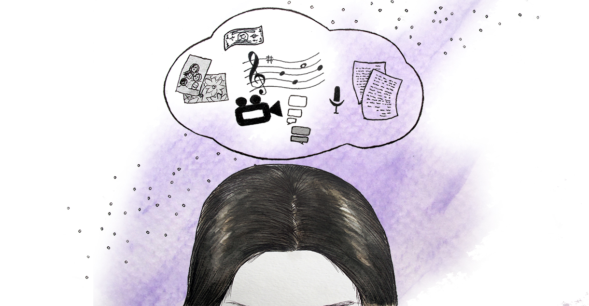
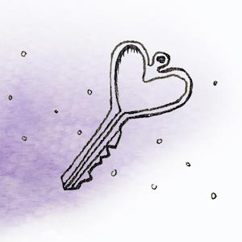

My partner has unwanted access to my online accounts.
Logging into a website may seem mundane, but it's a deeply personal action that safeguards your privacy—when your partner knows your login credentials, you risk your online autonomy. Your behavior can change without realizing it: you choose not to message a friend because it could upset your partner. You adjust your spending habits, fearing disapproval. Seeking sensitive healthcare, like counseling or reproductive resources, can be met with hostility. Online accounts should be shared with mutual respect for privacy. You give what feels comfortable, and your partner does not push for more. In coercive relationships, online accounts are surrounded by feelings of jealousy, suspicion, guilt, and insecurity. There is a lack of trust.
Securing your online accounts defends the intimate decisions of your everday life. Reflect on which accounts are most important to you and read the following strategies—you may withold access, you may preserve sensitive data, or you may make secret accounts. The right strategy is what feels best for you, balanced by your sense of safety. If you suspect your partner is secretly recording your computer activity, we suggest reading our guide My partner is monitoring my computer or cell phone activity before implementing these strategies.
Change your passwords
To secure an online account, change the password to a unique phrase or code that only you would know. When creating a password, don't use any words or phrases your partner could guess. Random combinations of words, such as "PurpleDishwasherPotato", are easily remembered and very difficult to hack. It's especially important that you don't re-use a password from another account. If you're changing a lot of a passwords, we strongly recommend using a password manager, which generates and stores passwords so you don't have to remember them. This makes it nearly impossible for a partner to guess your password. It's also much safer than writing passwords in a document, or on a piece of paper. Read our Protect Your Passwords defense strategy for more detailed information.
Fortify your account by enabling the Two-Factor Authentication strategy when you have the option. After you login with your username and password, you must provide a code generated by your phone or received in a text. Even if your partner has your password, they would still need your cell phone to access your account.
Create backups
 With unwanted access to your accounts, your partner may try to destroy or sabotage them: deleting emails, erasing photos, or unfriending people on social media. Create backups of your important data when you don't feel comfortable removing your partner's access.
With unwanted access to your accounts, your partner may try to destroy or sabotage them: deleting emails, erasing photos, or unfriending people on social media. Create backups of your important data when you don't feel comfortable removing your partner's access.
For emails, you could create a forwarding address so every incoming email is sent to an additional email address that your partner doesn't have access to. You also have options to download emails to your computer. With texts, you can enable text-forwarding, where your texts are saved on another device: possibly a friend or family member's phone. Alternatively, take screenshots of important conversations and store them in a safe place. On social media, you can often download years of activity, including posts, messages, and photos. Our Back-up Your Data defense strategy will explain everything you need to preserve this data.
Create secret accounts
Sometimes you can't risk messing with an account. In these cases, create an alternative account your partner doesn't know about. When you register online, use a totally new password, email address, and login name—it's important that your partner be unfamiliar with your login credentials. For a greater degree of privacy, use a private browsing window so your web history isn't recorded. You can also use a Library or work computer. Read our Create Secret Accounts defense strategy for more in-depth detail on establishing a secret account.
Conclusion
Private access to your online accounts is crucial for making choices about how you socialize, how you spend your money, how you arrange healthcare, and so many other aspects of your day-to-day life. By addressing your partner's unwanted access to these accounts, you take back control of these decisions. Depending on how comfortable you are managing your accounts, you can simply remove access by strengthening your passwords and adding two-factor authentication. Alternatively, you can protect your data from malicious interference by backing it up in a secure cloud or storage solution. Finally, you can always create secret accounts that conceal your activity from your partner. Regardless of which strategy you choose, you will reinforce your autonomy online.